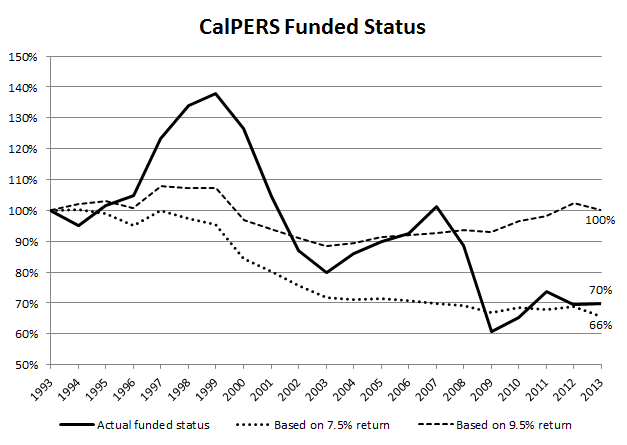

CalPERS' new risk mitigation plan won't fix what ails it
by Michael J. Sabin
Pensions & Investments, 11 January 2016
CalPERS has just adopted a risk-mitigation strategy that gradually will
reallocate its investment portfolio to a more conservative mix. Risky
investments like stocks will be reduced, and conservative investments like bonds
will be increased. The reallocation will be accompanied by a change in the
assumed investment return — currently 7.5% — to some lower value. The reduced
assumption about investment return will require higher contributions by
employers, because future pension costs will be discounted by the lower assumed
rate.
This certainly seems like a wise plan, and no doubt it is music to the ears of
critics who have long argued that a 7.5% discount rate artificially understates
pension liabilities. But is it going to address the fundamental problem that
ails the California Public Employees' Retirement System — namely, that it is
chronically underfunded? Perhaps not, if past history is a guide.
In presentations about the risk-mitigation plan, CalPERS has included a graph
that shows the history of the funded status. The graph shows the funded status
starting at 100% in 1993, then oscillating between overfunded and underfunded
over the next 20 years, finishing at 70% funded in 2013. The ups and downs are
easy to understand — that's the volatility of the risky investments. But what
about the downward trend that takes it from fully funded in 1993 to badly
underfunded in 2013? If the downward trend is due to investments performing
worse than expected, then yes, the risk-mitigation plan might be a fix. But if
the trend is not due to subpar investment return, then the plan won't be
addressing the root cause of the current underfunding.

So here is an exercise I did to understand the role of investment return. I went
to the CalPERS website and found reports containing the data underlying the
graph, meaning the year-by-year numbers for assets and liabilities. I also
grabbed the actual investment return that CalPERS reported for each year. This
varied a lot, reflecting the volatility of the investments.
Then I took this data and put it into a spreadsheet so I could fiddle with
investment return and see how it would affect the historical funded status. The
spreadsheet uses simple, textbook formulas. But despite its simplicity, the
answers it gets are precise. They show exactly how a change in investment return
would affect the funded status.
(I've made the spreadsheet available at
http://sagedrive.com/perf/.)
The first question I asked is: What would have happened had CalPERS earned
exactly 7.5% in each of the 20 years? And the answer, perhaps surprisingly, is
that its funded status in 2013 would be 66% — that is, lower than the actual
funded status of 70%. In other words, for all the criticism directed at the
current assumption of a 7.5% return, the simple truth is that CalPERS got
results that were better. A little trial and error revealed that their results
were equivalent to having earned a fixed 7.8% return — that's the return that
results in 70% funding.
This might seem surprising, because common wisdom is that public pension plans
like CalPERS are underfunded because of bets on the stock market that didn't pan
out. But it's no surprise to CalPERS officials. When challenged on the wisdom of
the 7.5% assumption, they have consistently responded that past investment
returns have exceeded that amount. And the spreadsheet confirms that. But then,
that raises the question: If CalPERS got investment results in line with what it
assumed, how did it get so badly underfunded? The answer is simple: its
actuaries understated how much employers needed to contribute to keep up with
the cost of pension benefits as employees earned them.
It's important to keep in mind that when CalPERS actuaries calculate how much
needs to be contributed, they make a lot of assumptions besides investment
return. They make assumptions about how fast salaries will grow, how many people
will work until retirement, at what age they will retire, how long they will
live, and so on. They plug all these assumptions into a big calculation that
supposedly spits out the precise amount that employers need to contribute to
fully fund pension liabilities. When things go awry, as they have over the past
20 years, there's not much an outsider can do to figure out what assumptions or
calculations went wrong. Except for investment return — that's the one thing
that's easy to check. And the check here shows that all was well with investment
return.
So the unavoidable conclusion is that the actuaries came up short. The
investment team at CalPERS got them results that were in line with what they
assumed, but their calculation about how much to contribute was way off. How far
off? That's a question that requires a more detailed analysis than the simple
spreadsheet.
(I address it in a
study
published in the Journal of Retirement.)
But here we can turn the question around and ask: How much higher would
investment return need to have been to overcome the actuarial errors? That's
easy. A little trial and error with the spreadsheet shows that a return of 9.5%
would have been needed in each of the 20 years for 100% funding in 2013. That's
much higher than the 7.5% now assumed, and it's much higher than any rate that's
ever been assumed by CalPERS.
What this suggests is that all the hubbub about investment return might be off
the mark. That hubbub is in response to the badly underfunded state of CalPERS.
Looking backward, the exercise here shows it wasn't subpar investment return
that caused the underfunding, it was bad actuarial forecasting. To be sure,
counting on 7.5% return going forward doesn't seem smart — it may or may not
happen, and the consequences might be dire if it doesn't. So the risk-mitigation
plan is welcome in that regard. But the lesson of the past 20 years is that
CalPERS actuaries have been calculating contribution rates that are too low to
keep up with pension costs, even when CalPERS investments have been fortunate
enough to achieve their assumed return. The risk-mitigation plan does nothing to
address that mismeasurement of the contribution rate.
Michael J. Sabin is an independent consultant in Sunnyvale, Calif.
He is author of
"Backtested Pension Math:
An Empirical Look at the Causes of CalPERS Underfunding,"
The Journal of Retirement, winter 2015.